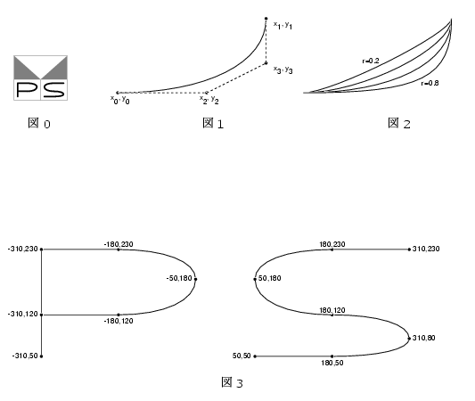

「プログラミング・シンポジウム」へ戻る
プロシンのロゴマーク
「第39回プログラミング・シンポジウム開催に際して」から引用
前回のシンポジウムの最後に, 木村泉さんから注文があった.
シンポジウムのシンボルマークを更新したらどうか, というのである.
今のマークは木村さんが幹事をつとめた夏のシンポジウム「構造的プログラミング」
のマークとして決めたものである.
Nassi-Shneiderman図の中にSとPが書いてあった
(Structured Programmingの頭文字).
翌年の冬のシンポジウムからPとSに変えて
(Programming Symposiumの頭文字)使っているが,
古びた感じは否めない. 木村さんはアンケート用紙の裏に, スケッチしてくれた.
特にSの中央の曲線が浴衣の帯のずり下がっているように, との希望であった.
今回から新しいマークである(図0). どのようにして書いたかを説明しよう.
PostScriptにcurvetoという6引数のオペレータがある. 図1に示すように,
現在のポイントが(x0, y0)にあったとして,
x2 y2 x3 y3
x1 y1 curvetoは
(x0, y0)から(x1,
y1)まで, (x2, y2),
(x3, y3)を制御点とした Bezier曲線を描く
ものである. 制御点
x2とy3はそれぞれx0,
x1とy1, y0を
r:1-rに内分する点とする.
rを0.2, 0.4, 0.6, 0.8と変えた時の曲線の感じは図2に示す通り.
r=0.6の曲線を図3の座標に従って描いたのが, 新しいマークである.
PとS
の向かい合う部分の曲率を同じにしてほしいという木村さんの要求は満たしていると思う.

「プログラミング・シンポジウム」へ戻る